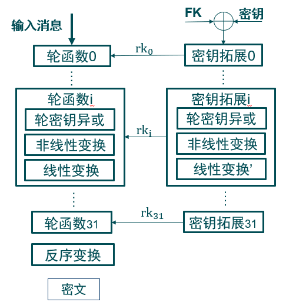
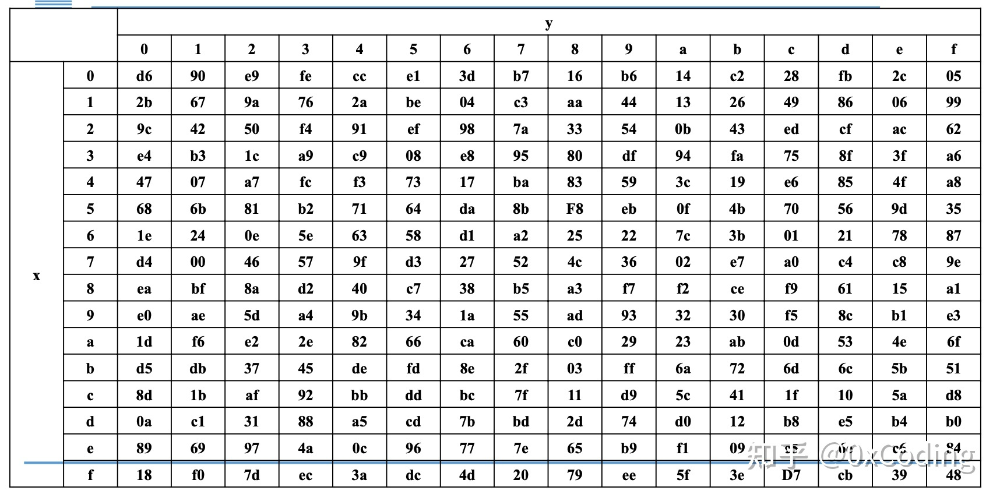

SM4 算法概述
SM4是一种分组密码算法，由我国国家密码管理局在2012年发布，常用于无线互联网加密等领域。
分组密码
分组密码是将一个明文作为整体加密并且通常得到的是与明文等长的密文分组。典型的分组大小是64位或者128位。同流密码一样，两个用户要共享一个对称加密密钥。
分组密码的输入为具有 $b$ 位长度固定的明文分组和密钥，输出为 $b$ 位的密文。明文长度若大于 $b$ 位，则可简单将其分为 $b$ 位一组的块。
工作模式概述
但是，每次使用相同的密钥队多个分组加密，则会引发许多安全问题（如对于相同的明文永远生成唯一的密文）。为了将分组密码应用于各种各样的实际应用，NIST 定义了五种“工作模式”。
- ECB：用相同的密钥队明文分组分别加密。
- CBC：明文输入时上一个密文组和下一个明文组的异或。
- CFB：一次处理 $s$ 位，上一次的密文作为输入，输出与明文异或。
- OFB：与 CFB 类似，用加密函数的输出填充移位寄存器。
- CTR：加密一个计数器，输出与明文异或。
SM4 算法流程
SM4 算法采用 32 轮非对称 Feistel 结构，其明文和密文长度都是 128 位，加密过程和解密过程处了轮密钥的使用顺序相反外，其他都是一致的。 SM4 算法的整体结构如下图所示：

SM4 主要涉及 3 种操作：轮密钥异或，非线性变换和线性变换。
- 轮密钥异或指当前分组和当前轮密钥进行按位异或运算。
- 非线性变换通过 S 盒完成，实现密码算法的混淆。
- 线性变换指的是对非线性变换的输出进行拓展操作。
非线性变换
由 4 个并行的 S 盒完成，每个 S 盒映射 8 位，整体上实现对 32 位输入的映射，记为 $\tau(\cdot)$：

线性变换
输入是非线性变换的输出，完成的是对 32 位输入的线性变换，记为 $L(\cdot)$：
其中用到的移位运算是 循环右移
1 | BYTE roll(BYTE x, int n) { return (x << n) | (x >> (32 - n));} // 循环右移 |
加解密运算
轮函数
总共进行 32 轮，初始的输入为 $(X_0, X_1, X_2, X_3)$
输入为 $(X_i, X_{i+1}, X_{i+2}, X_{i+3})$
输出为 $(X_{i+1}, X_{i+2}, X_{i+3}, X_{i+4})$
其中，单个 $X_i$ 表示32位数据，$X_{i+4}$ 的计算方式如下：
$T$ 由线性变换和非线性变换复合而成，即 $T(\cdot)=L(\tau(\cdot))$
加解密
第 31 轮轮函数运算完成后，对 32 轮的输出值进行反序变换，最终输出密文。
解密与加密类似，唯一的不同是将轮密钥的使用顺序改为倒序
1 | WORD exec(WORD _X, vector<BYTE> rk, bool enc) { |
密钥拓展
密钥拓展的输入分 3 部分，后两者为常数：
- 加密密钥 $MK=(MK_0, MK_1, MK_2, MK_3)$。
- 系统参数 $FK=(FK_0, FK_1, FK_2, FK_3)$。
- 固定参数 $CK=(CK_0, CK_1,\cdots, CK_{30}, CK_{31})$
计算方法如下：
首先，计算 $K_i=MK_i\oplus FK_i$，得到 $(K_0, K_1, K_2, K_3)$
之后，循环计算 32 轮得到 $rk_i$
其中，$T’$ 与 $T$ 类似，但是需要使用另一个线性变换 $L’(\cdot)$，即 $T’(\cdot)=L’(\tau(\cdot))$
1 | vector<BYTE> generateKey(WORD MK) { |